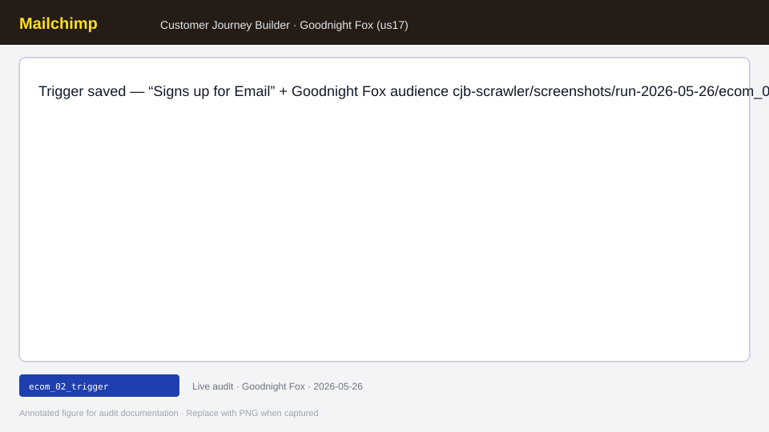
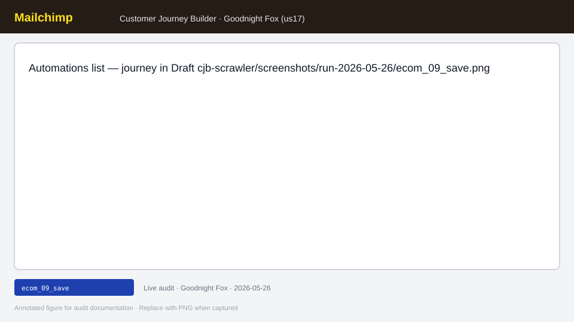
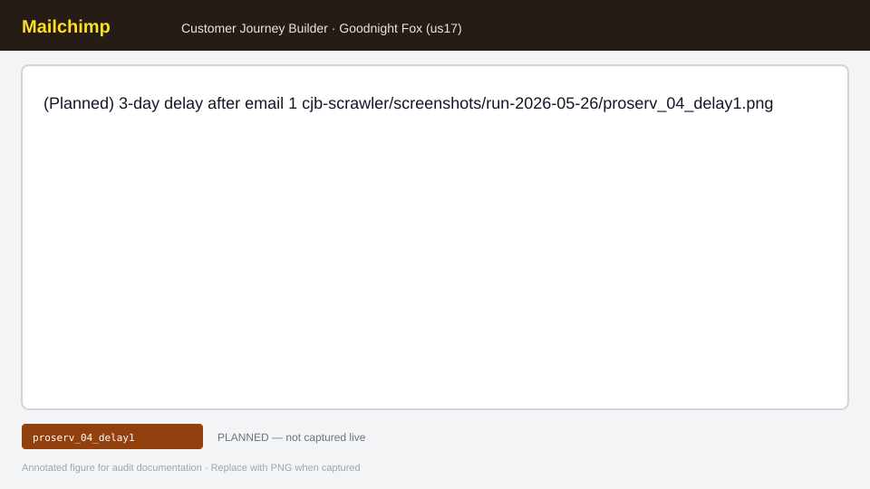
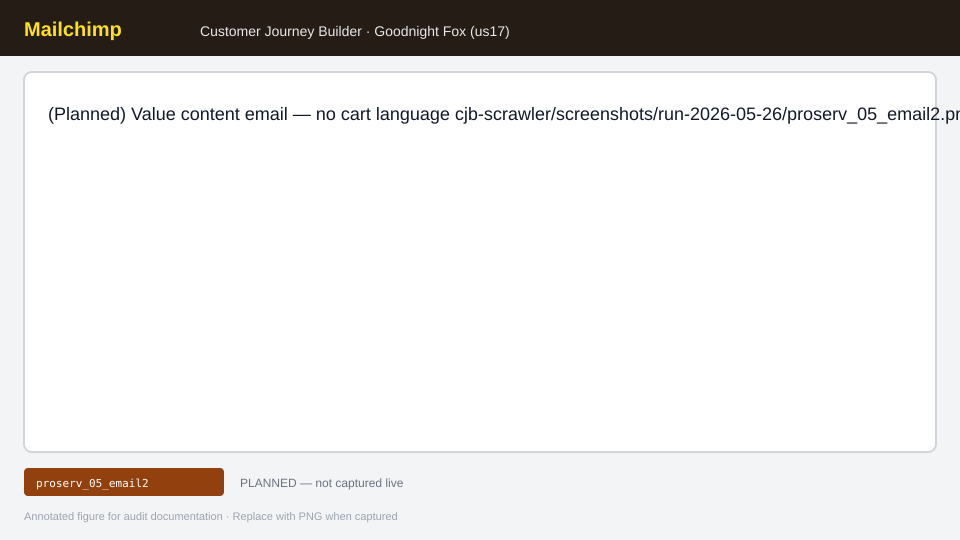

Persona: expert marketers shipping welcome/nurture automations · Account: Goodnight Fox (us17) · Run 2026-05-26 · Draft-only · Qualitative N=1 (scripted journey, not statistical VoC)
0
Flows launched
2
Draft journeys
14
Cross-cutting issues
~40%
E-com playbook complete
~25%
ProServ playbook complete
Executive summary
Launch readiness verdict: Neither journey could be turned on with confidence. Flow A (Scrawler_Ecom_Welcome_FirstPurchase, builder id=9171) has welcome subject set and a 2-day delay, but email 2+ content is incomplete and emails 3–4 were never added. Flow B (Scrawler_ProServ_LeadNurture_Appointment, id=9172) has a tag trigger and one email shell with no body configured.
Top 5 launch blockers (ordered by impact on “ship this week”):
Incomplete step content gates activation — Turn On / Continue affordances imply readiness before every email is designed; expert marketers cannot launch without a clear completion checklist. Launch-blocker
Trigger picker not searchable (P1 HVC: “Trigger Selection List Not Searchable”) — category tabs only; signup/tag triggers buried in long lists. Barrier
Legacy vs New Email Builder fork (P2 HVC: “CJB Still Uses Legacy Editor”) — automation email opens campaign wizard; breaks muscle memory for NEB-first marketers. Usability → Launch-blocker when content stalls
Opaque “ready to continue” rules — Continue disabled until map “complete enough”; Save and close blocked while email modal open; flow name must blur before “Choose a trigger.” Usability → Launch-blocker
Session entry friction — Intuit email-first login, cookie banner, SMS 2FA every cold start. Barrier (does not block Draft save once in, blocks repeat iteration)
Persona split: E-commerce marketers tolerate Popular-tab skew; ProServ marketers lose time scanning cart triggers. ProServ template gallery skew is a discovery barrier even when building from scratch.
Methodology
Design: Scripted qualitative journey (N=1) via CJB Scrawler playbooks — two expert-marketer personas, one live account.
Account: Goodnight Fox · datacenter us17 · internal staff account (dev toolbar visible — noted as noise for internal testers only).
Flows built: Draft only; activation deliberately avoided per Scrawler guardrails.
Evidence: Live browser session 2026-05-26; step logs in cjb-scrawler/findings/run-2026-05-26.jsonl (not committed); synthesis in cjb-scrawler-report.html and cjb-scrawler/fix-backlog.md.
Taxonomy: 8-stage CJB workflow (stages 1–8 from generate_cjb_workflow_health.py).
Screenshots: Annotated figures below (SVG); optional live PNG capture to cjb-marketer-audit/images/{step_id}.png (gitignored) on next authenticated pass.
Test audience: Contact search succeeded; dedicated Scrawler QA segment not created (setup blocked).
Capture spec: Full trigger picker showing tab strip and scrollable list; highlight absent search field.
Marketer goal
Find “signs up for email” without hunting every category.
Actions taken
Browsed tabs; selected signup trigger under Contact Activity (not Popular).
Issue
Type
Launch impact
HVC
No search in trigger list
Barrier
Blocks
Trigger Selection List Not Searchable (~$16K/mo cluster)
Popular tab skews e-commerce (buy product, abandoned cart)
Barrier
Slows
Wrong defaults for non-retail intents
ecom_02_triggerStage 2— pass

Screenshot: Trigger saved — “Signs up for Email” + Goodnight Fox audience cjb-scrawler/screenshots/run-2026-05-26/ecom_02_trigger.png
Capture spec: Canvas with starting point node configured; trigger side panel closed.
Marketer goal
Limit entry to new subscribers on test/production audience.
Actions taken
Configured Signs up for Email on Goodnight Fox list.
Issue
Type
Launch impact
HVC
See ecom_01_intent for trigger discovery friction.
ecom_03_email1Stage 4— pass + fail P2
Screenshot: Legacy vs New Builder choice OR campaign wizard with subject “Welcome to Goodnight Fox…” cjb-scrawler/screenshots/run-2026-05-26/ecom_03_email1.png
Capture spec: Email step editor showing builder fork modal or legacy campaign setup with subject line filled.
Marketer goal
Ship on-brand welcome email immediately after signup.
Actions taken
Added Send email step; set subject; body partially configured via wizard.
Issue
Type
Launch impact
HVC
Automation email opens Legacy vs New Builder fork / campaign wizard
Screenshot: (Planned) Third email — first-purchase offer ~10% off cjb-scrawler/screenshots/run-2026-05-26/ecom_07_email3.png
Capture spec: Email 3 step with promo CTA and code placeholder.
Marketer goal
Convert with exclusive first-order discount.
Actions taken
—
Issue
Type
Launch impact
HVC
Emails 3–4 not built
Launch-blocker
Blocks
—
ecom_08_reviewStage 6— pass
Screenshot: Review map / header — Continue disabled or Draft status; Turn On visible but not clicked cjb-scrawler/screenshots/run-2026-05-26/ecom_08_review.png
Capture spec: Top bar showing Save, Continue (disabled state), Turn On (not activated).
Marketer goal
Validate map before go-live; avoid accidental activation.
Actions taken
Reviewed canvas; did not Turn On.
Issue
Type
Launch impact
HVC
Continue disabled until flow sufficiently complete — unclear readiness
Usability
Slows
—
Incomplete steps = cannot confidently Turn On
Launch-blocker
Blocks
Premature Turn On theme (inverse: can’t finish)
ecom_09_saveStage 6— pass

Screenshot: Automations list — journey in Draft cjb-scrawler/screenshots/run-2026-05-26/ecom_09_save.png
Capture spec: Customer Journeys index row for Scrawler_Ecom_* with Draft badge.
Marketer goal
Save work and return later to finish content.
Actions taken
Save and close (after closing email modals).
Issue
Type
Launch impact
HVC
Save and close blocked while email modal open
Usability
Slows
—
Flow B — ProServ lead nurture + appointment
Journey:Scrawler_ProServ_LeadNurture_Appointment · builder ?id=9172 · Trigger: Tag added scrawler-proserv-lead
proserv_00_navStage 1— pass
Screenshot: New ProServ journey — build from scratch (no abandoned-cart template) cjb-scrawler/screenshots/run-2026-05-26/proserv_00_nav.png
Capture spec: Blank canvas; flow name Scrawler_ProServ_*.
Marketer goal
Start nurture flow without e-commerce template noise.
Capture spec: Optional gallery screen showing retail-first templates (for persona gap evidence).
Marketer goal
Find consultation/nurture template.
Actions taken
Skipped gallery; noted skew from parallel e-com run.
Issue
Type
Launch impact
HVC
Popular / featured templates retail-heavy
Barrier
Slows
Hurts ProServ marketers (HeyMarvin cohort)
proserv_02_triggerStage 2— pass
Screenshot: Tag trigger — combobox with long tag list; new tag scrawler-proserv-lead; Save Trigger disabled until confirmed cjb-scrawler/screenshots/run-2026-05-26/proserv_02_trigger.png
Capture spec: Tag picker with radio selection; highlight finicky click target on tag row.
Marketer goal
Enter leads when tag applied (CRM/handoff pattern).
Actions taken
Created tag via combobox; selected tag; saved trigger.
Issue
Type
Launch impact
HVC
No trigger search (same modal as e-com)
Barrier
Blocks
Trigger Selection List Not Searchable
Huge tag list; radio click intercept
Usability
Slows
—
Save Trigger disabled until tag confirmed
Usability
Slows
—
proserv_03_email1Stage 4— pass (shell only)
Screenshot: Single email node — content not configured cjb-scrawler/screenshots/run-2026-05-26/proserv_03_email1.png
Capture spec: Canvas with one Send email step; editor not completed.
Marketer goal
Personal intro — low promo tone.
Actions taken
Added email step; did not configure body.
Issue
Type
Launch impact
HVC
Legacy editor fork (same as e-com)
Usability
Slows
CJB Still Uses Legacy Editor
Incomplete email = launch blocked
Launch-blocker
Blocks
—
proserv_04_delay1Stage 3— not run

Screenshot: (Planned) 3-day delay after email 1 cjb-scrawler/screenshots/run-2026-05-26/proserv_04_delay1.png
Marketer goal
Space nurture emails for professional services cadence.
Actions taken
—
Issue
Type
Launch impact
HVC
1-week delay default if added without edit
Usability
Slows
—
proserv_05_email2Stage 4— not run

Screenshot: (Planned) Value content email — no cart language cjb-scrawler/screenshots/run-2026-05-26/proserv_05_email2.png